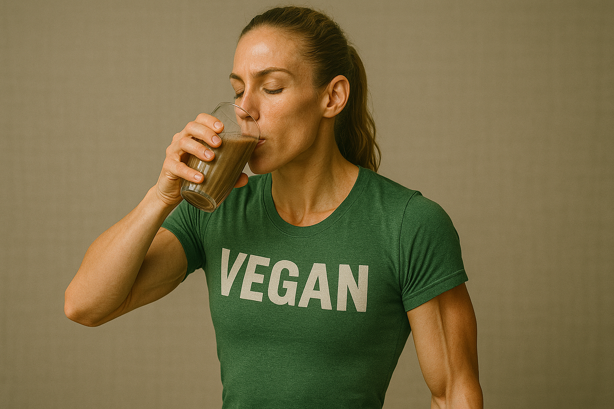

Is Vegan Protein Powder Good for Keto Diet?
A ketogenic diet caps daily carbohydrates below about fifty grams and leans on fat for fuel, but protein still matters because it preserves muscle during the switch to ketone metabolism. Reviews of athletic keto protocols caution that overshooting protein can dampen ketosis only if intake climbs far above two grams per kilogram, so typical supplemental scoops will not throw you out of fat-burn mode. *
Going plant-based on keto works because modern isolates strip almost all carbs. Pea protein concentrate averages twenty-four grams protein and roughly one gram net carbs per scoop, while brown-rice isolate hovers near two grams. *
Adding more plants may even help long-term gut health on keto. A 2022 review found that cruciferous vegetables, berries, and nuts within a ketogenic pattern boosted short-chain fatty-acid production, offsetting microbiome shifts tied to very-low-carb eating. *
Acid load is another concern for high-protein keto followers. Researchers recommend moderating total protein and emphasizing alkaline mineral-rich plant foods to keep blood pH stable—an approach that aligns perfectly with pea-rice powders paired with leafy greens. *
Rapid fat loss often drives interest in keto. A classic very-low-carb study showed greater short-term weight and fat loss than a low-fat plan, especially in men, without compromising resting metabolic rate. *
Shaker-ready options that keep carbs to a whisper start with Naked Pea Protein: One ingredient, twenty-seven grams protein, just two grams net carbs. Blend with unsweetened almond milk and MCT oil for a breakfast that stays under five carbs.
Vega Sport Premium Protein: Thirty grams protein, roughly three grams net carbs, plus five grams BCAAs that help spare glycogen during fasted training.
Sunwarrior Warrior Blend: Eighteen grams hemp-pea-goji protein, two grams carbs, stevia-sweetened, mixes thin—useful before long runs when a heavy shake would slosh.
Truvani Plant-Based Protein Powder: Six clean ingredients, three grams net carbs, monk-fruit sweetened chocolate that doubles as keto dessert when blended with ice and cocoa nibs.
Keep total daily protein between 1.6 and 2.0 grams per kilogram body weight, distribute it across three or four meals, and watch carbs from vegetables and nuts so the combined tally stays keto-compliant. With carb-stripped vegan powders on hand, you can hold ketosis, hit muscle targets, and keep your diet free of dairy all at once.